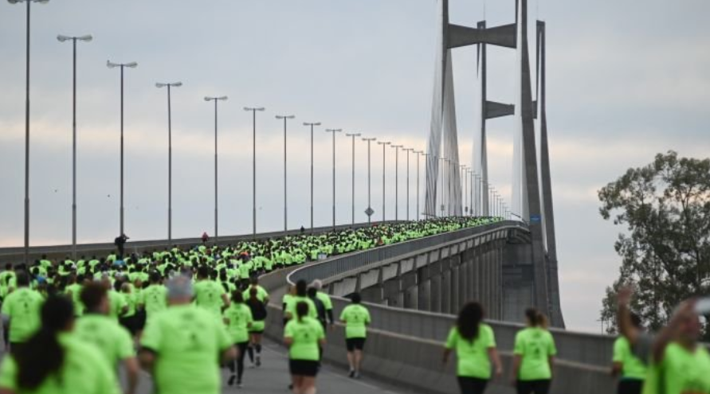

Más de 23 mil runners fueron parte de la Media Maratón de Buenos Aires, que tuvo récords nacionales y de la prueba, además de un clima de fiesta en todo el recorrido.
La competencia más convocante de la Argentina, que tuvo cupos completos desde hace varios días, se desarrolló en condiciones climáticas ideales para correr.
En cuanto a los corredores de alto rendimiento, se registraron tres récords: mejor marca femenina de la prueba, mejor registro argentino y sudamericano entre las damas.
Una fiesta para el running
Los 21k de Buenos Aires se vivieron con un clima festivo desde muy temprano, con runners y familias que se acercaron a los bosques de Palermo con gran entusiasmo y aprovechando las condiciones ideales para correr.
Con la entonación del himno nacional y una bandera nacional gigante, la largada y la llegada estuvieron en Figueroa Alcorta y Dorrego, y el recorrido incluyó los principales puntos turísticos de la Ciudad, así como también el paso por las avenidas más importantes.
El Cabildo, la Casa Rosada, la Catedral Metropolitana, el Monumento a Julio Roca, el Planetario, Floralis Genérica, la Facultad de Derecho, el Obelisco, la Avenida 9 de Julio (la más ancha del mundo), y el Monumento a los españoles fueron parte del circuito de la Media Maratón de Buenos Aires.
Récords y ganadores
La prueba contó con cambios en el circuito que la volvieron más rápida y fue ganada por el keniata Kipkorir Konga, que cruzó la meta en 59 minutos y 7 segundos, y quedó a tan sólo dos segundos de alcanzar el récord de la Media Maratón de Buenos Aires.
El primer argentino fue el mendocino Ignacio Erario, que cruzó la meta en 1 hora, 1 minuto y 59 segundos, registrando el segundo mejor tiempo nacional de la historia y finalizando en la séptima colocación de la clasificación general. David Rodríguez y Fabián Manrique completaron el top 3 de corredores nacionales.
Entre las damas, la marplatense Florencia Borelli logró mejorar su propio tiempo, estableciendo un nuevo récord argentino y sudamericano, con 1 hora, 9 minutos y 28 segundos (3 segundos menos que la anterior marca). El podio argentino se completó con la misionera Chiara Mainetti y la chaqueña Marcela Gómez.
En cuanto a la ganadora, fue la etíope Ababel Yeshaneh Brihane, con un tiempo de 1 hora, 6 minutos y 10 segundos, alcanzando el nuevo récord de la competencia.

Se corrió la maraton del puente Rosario-Victoria
Ya es un clásico en los últimos cinco años y la más esperada. La maratón se viene realizando con una convocatoria muy participativa y que une a dos ciudades emblemáticas a través del puente que las une: Rosario-Victoria.
En la prueba de media maratón (21 kms) o la integrativa de 11 contó con la presencia de 5 mil corredores.
Participaron atletas locales y otros de distintas partes del país (incluso del extranjero). La largada a las 8 en la parte del puente que se corresponde con la intersección de Boulevard Rondeau y el terraplén.
Todo fue con mucho color y alegría, no solo de los corredores sino también de una gran cantidad de familiares y amigos quienes los esperaban para darle un cálido recibimiento tras la competición.
“Esta es la segunda carrera de calle más larga de Rosario (después del Maratón de la Bandera, de 42 km)”, destacó a los medios de la ciudad el organizador, titular de EcoRace, Juan Echeverría y continuó “El boca a boca de los corredores es una de las cosas que más la impulsan y que luego la hacen una de las pruebas más esperadas del año. Pero además el lugar es especial, correr arriba del puente, con esa vista tan diferente que tienen los corredores. Es una conjunción de cemento y naturaleza muy especial. No hay carreras de este tipo el resto del año”.
Más de 100mil personas corrieron la Bimbo Global Race
Después de más de dos años sin carreras presenciales, este año se retomó la actividad con todo. La temporada alta de maratones, que coincide con la llegada del clima un poco más cálido, trajo otra competencia a la Argentina, pero esta vez, el objetivo no sólo era llegar, si no también ayudar.
La Bimbo Global Race, el evento benéfico deportivo más importante de la compañía, tuvo su séptima edición y esta vez la sede principal fue la provincia de Buenos Aires, más precisamente en Vicente López, donde más de tres mil corredores cumplieron con el recorrido oficial.
Ganador internacional y segundo puesto argentino
En una competencia global, el ganador tenía que ser internacional. El ecuatoriano Rafael Loza llegó en primer lugar con un tiempo de 29:04 en 10K. Como cada uno de los ganadores en cada ciudad, tendrá como premio participar el año que viene en la edición de Los Ángeles.
Por haber sido la sede mundial de esta edición, la carrera en Buenos Aires contó con la participación especial de los ganadores de todo el mundo de 2019, la última edición presencial, previa al comienzo de la pandemia. El ganador de esa edición había sido el argentino Ignacio Erario, que esta vez llegó en segundo lugar.
“Las sensaciones de la carrera fueron buenas, venía con molestia y no sabía en qué condición iba a llegar. Por eso corrí un poco incómodo casi todo el recorrido, pero por suerte pude hacer un buen tiempo. Fue una carrera entretenida”, dijo el corredor local.
Los tres mil corredores que recorrieron por la zona costera de Vicente López se dividieron en categorías de 3, 5 y 10K. Además, había un circuito especial de 600 metros para los más chicos.
Al ritmo de la solidaridad
Al igual que en los últimos 6 años que se realizó la carrera, el Banco de Alimentos recibirá 20 rebanadas de pan Bimbo por cada uno de los participantes de la carrera, en este caso unas 72.560 rebanadas en total.
“Como compañía, tenemos como propósito alimentar un mundo mejor, y es por esto que incentivamos actividades de este tipo, saludables en familia, que además tienen una parte solidaria. Lograr que la gente sienta que está haciendo un aporte solidario importante es muy especial. Por eso teníamos tantas ganas de volver a hacerla después de dos años” contó Martín Ferrara, Gerente de marketing de Bimbo Argentina.
Hasta ahora, Grupo Bimbo ha donado más de 16 millones de rebanadas de pan y se espera que esa cantidad siga creciendo año tras año.